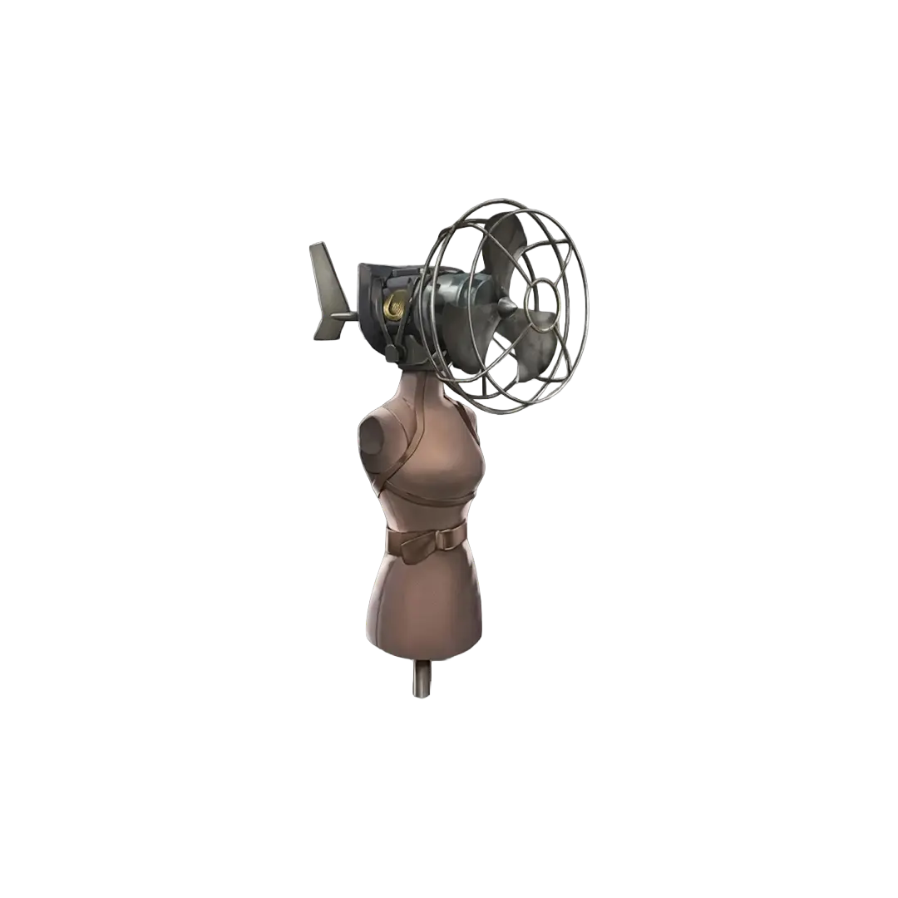
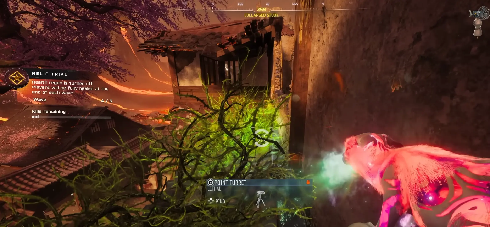

Ten relikt wymaga ogromnego skupienia i dotarcia do bardzo wysokich rund. Tylko dla wytrwałych!

Aby w ogóle móc aktywować to zadanie, musisz grać w trybie Klątwa:
PRO TIP: Osobiście polecam Tier 3, bo dzięki temu odblokujecie 4. poziom ulepszenia w maszynie Pack-a-Punch, co bardzo ułatwi sprawę w wysokich rundach.
To najtrudniejsza część. Musisz dotrzeć do 60 rundy, spełniając jeden kluczowy warunek: NIGDY nie możesz przegrać fali ataku gdy smok atakuje mapę.
Jeśli obroniłeś flagę i dotrwałeś do przejścia z rundy 59 na 60, usłyszysz charakterystyczny śmiech Mr. Peeks.
Wewnątrz portalu czeka Cię 6 fal przeciwników, w tym dwie fale z przeciwnikami typu HVT (High Value Targets – bardzo silni wrogowie).

Po ukończeniu szóstej fali odblokujesz relikt Turbina Manekina. Jego działanie jest bardzo ryzykowne: